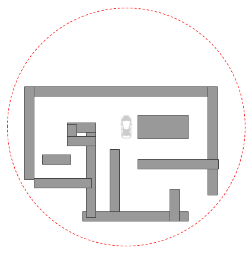
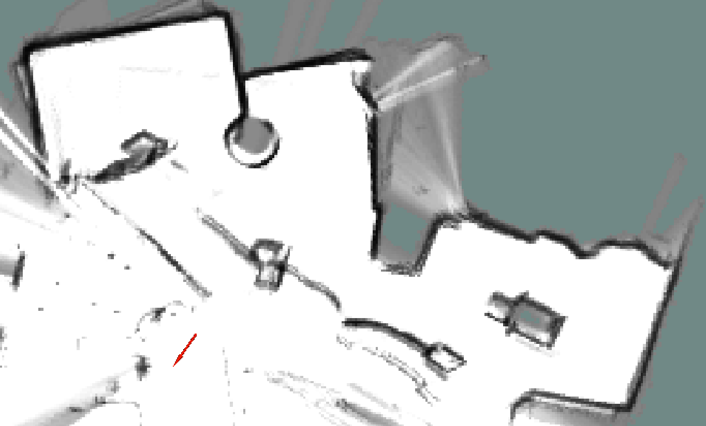
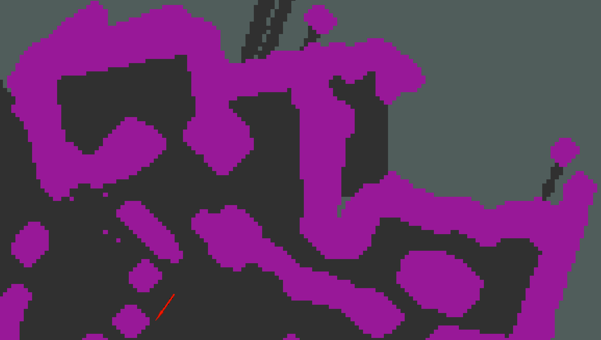
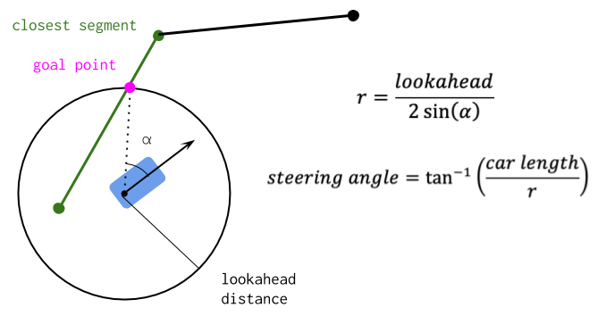
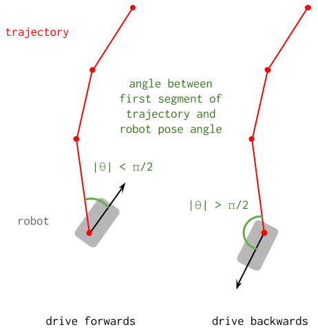
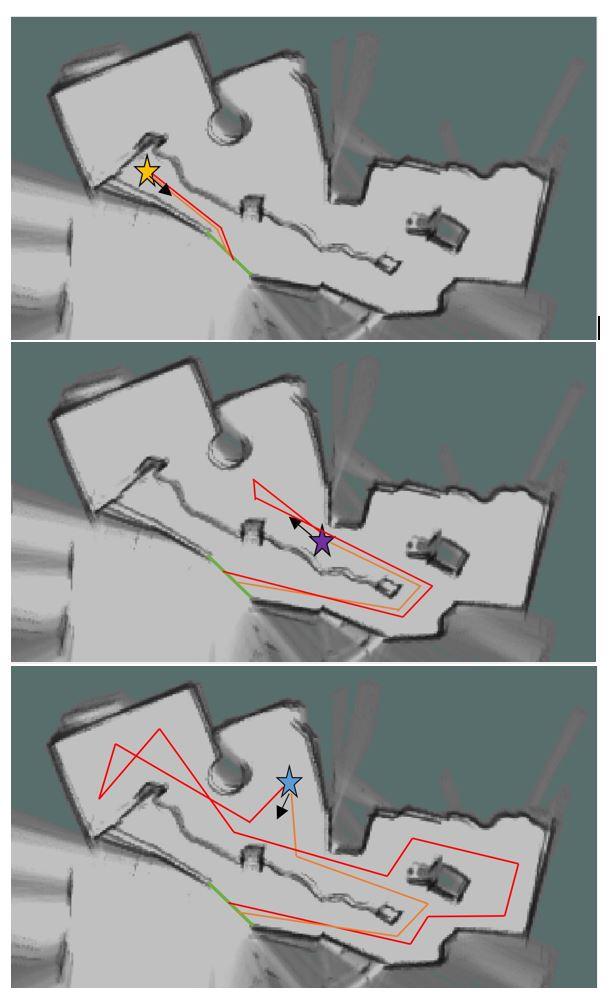
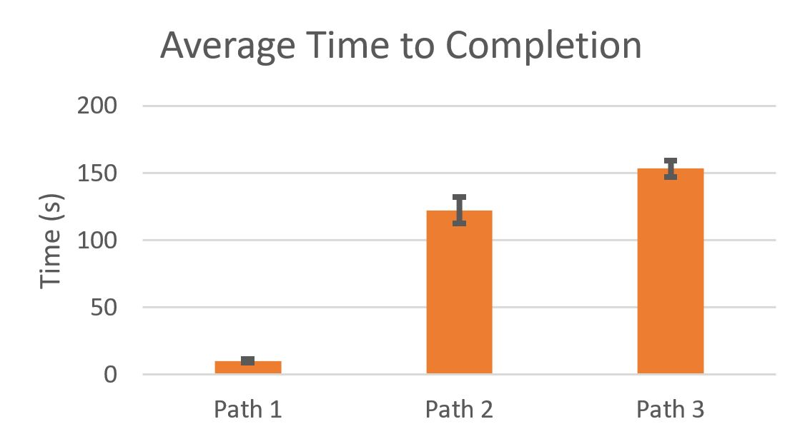
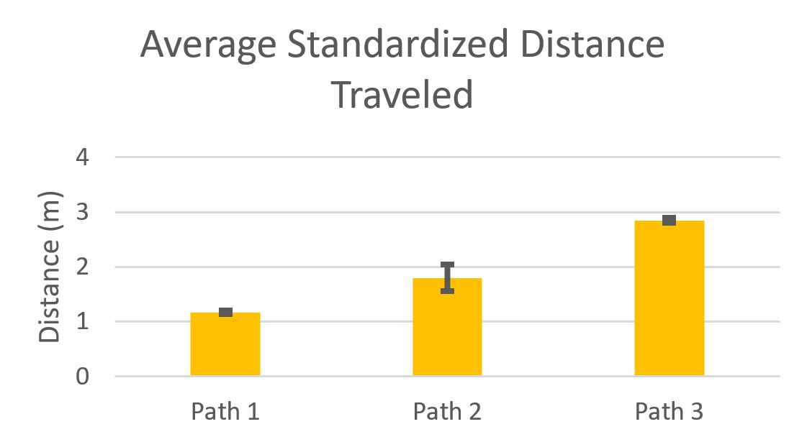

Kevin Carlson, Susan Ni, Talia Pelts, Jonathan Samayoa, Vlad Seremet
Table of Contents:
1. Overview and Motivations
2. Proposed Approach
a. Frontier exploration
b. Path planning
c. Trajectory tracking
3. Experimental Evaluation
4. Lessons learned
5. Potential Improvements
1. Overview & Motivations
Susan

Fig.1 - Example maze of known radius that could be used during the labyrinth challenge.
The labyrinth final challenge involves the robot being placed in an unknown maze of a given radius and having to exit the maze in a time constraint. figure 1 illustrates an example maze that could be used. This challenge will use simultaneous localization and mapping from the localization lab so the robot can generate a map of the maze as it drives and keep track of where it is in the map. This challenge will also utilize a path planning algorithm from the path planning lab to create a path that represents a solution to the maze and use the pure pursuit algorithm from the same path planning lab to follow the solution path to the exit. It is given that the maze is multicursal and not simply connected, so the robot cannot simply follow one wall until it exits the maze. The main difficulties our team is anticipating when approaching this challenge is include how to efficiently explore the map and how to ensure the robot can maneuver in tight spaces (i.e. 3-point turns when leaving dead ends).
2. Proposed Approach
Susan
To solve the maze, we use frontier exploration to generate a map of the maze and once the car detects an area outside the radius of the maze, a path is generated for the car to follow to complete the maze. To search frontiers, our priority queue is based on proximity to the car's current location because search algorithms such as breadth-first search and depth-first search require the car to make giant leaps from one frontier to another which is not instantaneous in real life. To follow the paths generated via Dijkstra's algorithm from the car's location to the nearest frontier, the car uses pure pursuit both forwards and backwards, depending on which direction is more optimal, considering the maze has fairly tight hallways.
A. Frontier Exploration
Processing the map

Fig.2 - Map of the maze using Google Cartographer.
Our team uses Google Cartographer for simultaneous localization and mapping. Cartographer outputs a grid of 20 cells/meter, each cell being assigned a value of -1 if it is "unexplored" or a value from 0 to 100 representing the probability of that cell being occupied. To make this map more useful and easy to work with, we downsampled it to about 10 cm/cell. We then converted it to a true occupancy grid that only contains three values: -1, 0, and 100 for "unexplored", free space, and occupied, respectively. Additionally, we "thickened" the walls and assigned a cost to each cell based on its distance from a wall in order to avoid wall collisions.
Downsampling and converting the map into a true occupancy grid.
First, we define a downsampling factor. Let's call it d. Each cell in the downsampled map is d x d cells in the original map. We consider a cell in the original map to represent a wall if its value is greater than 50. If at least 10% of the "original" cells in the downsampled cell are occupied (value > 50), then we mark the downsampled cell as occupied as well.
Thickening the walls

Fig.3 - Map of the maze after the walls were thickened (using nearest neighbors approach).
In order to "thicken" the walls on the map, we defined a procedure that creates a copy of the map, iterates through every cell, and if the cell has at least two occupied neighboring cells on the original map, the cell is marked as occupied as well. At the end, the copy is saved and the old map is removed. We repeat this process three times in order to ensure our map is sufficiently dilated.
Assigning costs to the cells on the map
If one just run BFS on an occupancy grid, the shortest path will have sections that are very close to walls. In order to avoid this, we assign a cost to each cell based on its distance to the closest wall. The closer to a wall a cell is, the higher the associated cost. The cost of a cell we use is 2*20/2^(# cells from wall). Any cell that is more than 20 cells away from the nearest wall is assigned a cost of 0.
B. Path Planning
Fig.4 - An example of how Dijkstra's algorithm chooses a path.
For path planning, we use Dijkstra's algorithm. The algorithm returns the path of minimal cost to the closest "unexplored" cell (with value -1) from the current position of the car. The cost of a path is the sum of the costs of the cells along it.
Dijkstra's algorithm performs frontier exploration until it finds a destination. It always expands the frontier from the point of minimal distance, or cost, from the starting point.
Due to our lidar not being able to see backwards, it is highly preferable that the paths generated be directed forward. Therefore, we draw an imaginary wall behind the car on the map and then run our path finding algorithm. If the algorithm can't find any path, we remove the wall and try generating a path again.
C. Trajectory Tracking
For trajectory tracking, we use the pure pursuit algorithm from the path planning lab. To reiterate from last lab, the pure pursuit algorithm begins by finding the segment in the trajectory that is closest to the car. Then starting from the closest segment, the algorithm iterates through the rest of the segments in the trajectory until a segment that contains a point exactly one "lookahead distance" away from the car is found. The steering angle commanded to the car to follow the trajectory then becomes a function of the lookahead distance, the angle from the line segment made from the goal point and the car position to the car, and the car's length. The geometry and equations used for the pure pursuit algorithm are illustrated in figure 5.

Fig.5 - The geometry and equations involved in the pure pursuit algorithm.

Fig.6 - How to determine if the trajectory is in front of or behind the robot.
Since the maze has tight hallways, the car cannot always make a full turn to start following a trajectory forwards without hitting a wall. This is especially the case when the trajectory and the car are facing in opposite directions as shown on the right of figure 6. One possible solution to this issue is to implement a three-point turn every time the car needs to turn around. However, our car uses a Velodyne lidar to collect its scan data, and this lidar cannot detect objects within 0.5 meters. This means that if the car were to begin a three-point turn, it would not be able to detect how close it is to a wall in order to change the direction of driving.
Therefore, we decided to incorporate pure pursuit in reverse whenever the trajectory was behind the car. All of the calculations for pure pursuit in reverse are the same as before, except the sign of the final steering angle and speed the car is commanded to drive is reversed. The metric we use in order to determine if the trajectory is in front or behind the car was the difference in angle between the first segment of the trajectory and the car's pose, both in the world frame. As shown in figure 6, if the difference in angle is more than π/2, then that means the car is facing in the opposite direction of the trajectory, and pure pursuit in reverse should be used over the regular pure pursuit algorithm.
3. Experimental Evaluation
Talia

Fig.7 - The three maps above (determined by Google Cartographer on the Robot) represent the trajectories of the Robot at different start points (indicated by the star and black orientation arrow). The green line represents the end goal. The orange line represents the shortest path the robot could travel (the base line) and the red line represents the approximate path of the robot throughout the trials.
We chose to focus our testing of the Maze Solver on real life scenarios. Due to the increased accuracy of Google Cartographer in simulation and the near-sightedness of the 3D Lidar, we decided that testing on the car would give us a better understanding of its performance for tuning and debugging purposes. We chose to evaluate our car in one maze. The maze included islands, dead ends, and tight passageways so as to mimic all possible maze scenarios. In order to collect as much data as possible, we varied the starting position of the car in the maze and measured its performance in all cases.
We placed our car in 3 positions in the maze. For each position, we measured the distance of the shortest path from the starting position to the goal. We used this distance as a baseline measure for our car. For each of the 3 positions, we ran the maze solver 3 times. We timed the maze solver and we measured (approximately) the total distance traveled by the car. We compared these distances to the baseline of that position.
Figure 7 indicates the approximate trajectories of the robot compared to the what the ideal trajectory would be given knowledge of the maze in advance. The trajectory of Path 1 is almost identical to that of the ideal trajectory because the robot heads towards open space and never arrives at a junction where it must decide where to go. The trajectory of Path 2 requires some extra distance covered due to the orientation of the robot. The robot is compelled to move forward until occupied space encourages the robot to turn around and head towards the ideal trajectory. Lastly, in Path 3, the robot is faced with a junction and choses to head towards a dead end before heading in the right direction. The robot also takes a longer route to get to the goal point after heading in the right direction. This explains why the standardized distance traveled is significantly greater for Path 3. Overall, standard deviation (as indicated by the error bars) for time traveled (Fig 9) and for distance traveled (Fig 8) is relatively low. This is because the frontier exploration algorithm is deterministic. Each time the robot begins in the same location and orientation, it will explore the same frontiers in the same order.

Fig.9 - This graph shows the average time it took the robot to complete each path.

Fig.8 - This graph indicates the average standardized distance traveled by the robot in each of the three trials for each path. Standardized distance is calculated by dividing the distance traveled by the robot by the length of the base line distance..
4. Lessons Learned
Kevin
Over the course of this challenge, we learned the importance of prioritizing tasks and having a back-up algorithm.
At times in the lab, we focused on making the path finding and pure pursuit algorithms more robust while the basic movements of the maze solver did not work as anticipated. For example, we tried to implement dubens curves prior to having a working maze solver. This attempt to improve an already broken algorithm delayed our finding of a minimum viable product, costing the team invaluable time.
At the same time, we learned that having a simple backup algorithm is essential should the more robust algorithm not be completed. For this task, we realized that a stochastic wall follower algorithm could replace our pure pursuit controller to guide the car through the maze. While a wall follower would most likely take more time to solve a maze, it would at least be able to explore the maze.
5. Potential Improvements
Jonathan
Our current implementation of a maze solver works well, but it has some issues and there are a lot of improvements we could implement in order to make it more robust.
The dynamics of the car itself are really important for path planning, but our current implementation does not take these into account. Our current path-planning algorithm for the maze works by using nodes and making paths between these nodes using Dijkstra's algorithm. The nodes are just cells from our down-sampled map, and the cost associated with them is determined by how close the cell is to a wall. By finding the least-cost path through this maze, we try to avoid walls. The issue with this implementation is that it is purely based upon cell cost. The turning radius of the car is never taken into account. As a result, we sometimes publish paths that the car cannot physically follow. We currently rely on our safety controller to get us out of these situations where the car could collide with an object. Using another representation of trajectories such as *carthoid* curves would enable us to create smoother paths that would help both avoiding collisions as well as driving with pure pursuit. Having these smoother paths that take into account car dynamics would also allow us to increase the speed at which the car travels. Currently the car explores the car explores the maze slowly because of these uneven paths and to allow the safety controller to kick in soon enough to avoid obstacles.
Another issue we ran into with our current implementation is that because our current generated paths are only dependent upon low-cost and nearest frontier, we run into the issue where we cannot find a goal point for pure pursuit because our lookahead distance is static. Sometimes the start point of the trajectory is slightly too far from the car and sometimes the end of the trajectory is too close (because the maze environment is concave, the absolute distance between the start and end of a path can be less than one lookahead distance). Our current solution for this problem is generating a new path when we cannot find a goal point for the current one. This is not the most efficient solution, as this means we are no longer exploring the closest frontier and it is computationally expensive to generate new paths, which takes time (as can be seen when the car pauses in the maze to generate new paths). A better solution would be to make a dynamic look-ahead distance and change it accordingly based upon what path is generated and the position of the car with respect to that path.
Our current lidar is only capable of seeing objects with a minimum distance of 0.5 meters. If an object is closer than 0.5 meters, then the lidar views this as an object that is an infinite distance away. We currently run into issues where our car will re-map a previously discovered wall as not existing because it gets within 0.5 meters of it and thinks that nothing is there. As a result, sometimes paths are generated that go through walls. This happens very rarely, but when it does we rely on wall dilation as well as our safety controller. One proposed solution to this problem is that when we receive a scan of distance infinity from our lidar, we change it to a random number between 0.0 and 0.5 using a uniform distribution. This would solve the issue of deleting/re-mapping pre-existing walls as well as help us avoid generating paths too close to walls. The problem with this is that if a path in the maze is 1 meter or less wide, our car would never be able to traverse it, and would always map that something exists there. Another solution is to find these specific laser scans in the data, and remove them before we send the lidar data to Google Cartographer. This means that no scans that are of a value of infinity would be used, avoiding the remapping of walls. We will test both solutions in future to determine which one is more optimal, but it may vary based upon environment.
As previously discussed, we want our car to avoid bumping into walls/obstacles at all costs. Currently we dilate our walls using a nearest-neighbors method. This does not always work, as sometimes there are paths being generated that go too close to walls. In the future, we want to dilate our map more to avoid paths that are too close to walls, but we also have to figure out a way to not dilate so much that narrow passages are blocked off. Dilating the map works well for mazes that are more open, but for mazes that are more narrow, it could block off some of the maze.
Lastly, we want to implement a "drive to the end" functionality for the car. Our current path planning only looks for the nearest frontier, and creates a path there. However, if we are trying to escape a maze of a given radius, if we discover a point that is outside this given radius, we want to drive there immediately. We did not implement this because it was too computationally expensive to check if a point was discovered outside the radius every time the car wanted to plan a new path.